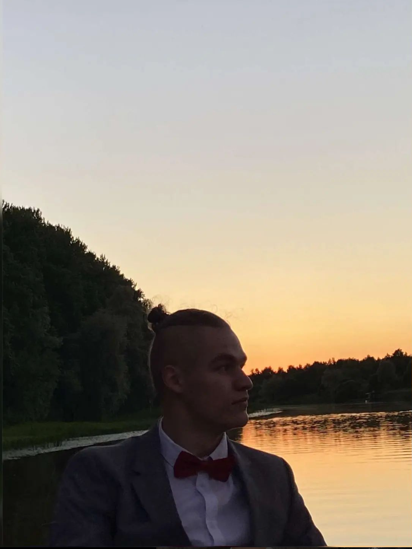

It`s me here, under :D

Summary
I am a highly motivated university student with a motivation to expand my knowledge and immerse into computer science.
My education
- Tartu Annelinn`s high school - secondary education (2019-2022)
- Tartu University(Bachelors) - high education (2022-2025)
Working experience
- None :D
Skills
- Python
- Java
- Spring(in progess)
- HTML5
- CSS(in progress)
- Postgre
- SQL
- OOP
- VirtualBox
- Azure
- Alghorithms and data structures
- Software testing